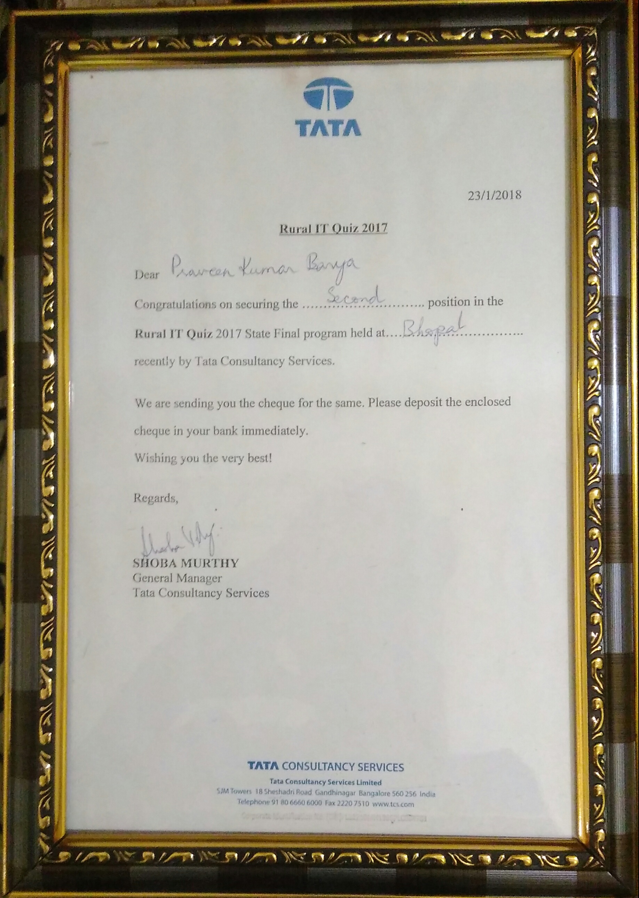

Back
TCS National Rural IT Quiz
Runner-Up
Tata Consultancy Services National Rural IT Quiz 2017 - State Final Madhya Pradesh
Certificate

TCS National Rural IT Quiz
Runner-Up
In The Tata Consultancy Services National Rural IT Quiz 2017 - State Final Madhya Pradesh Held By IT & BT Department of Karnataka and TCS.
.